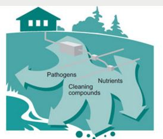

March 20, 2016
Taking Care of Business: Tips for Septic System Owners

It’s not a very pleasant topic, but it’s less pleasant when things go wrong. Some problems, like a blockage, make themselves known very quickly, but others may cause problems that you don’t realize.
Though the septic system is buried and easily forgotten, it’s actually a small, underground passive waste-water treatment system with both mechanical and biological components. When it’s undersized, outlived its life, or otherwise not functioning properly, nutrients and harmful bacteria can make their way to nearby streams and ponds causing harmful algae growth and possibly become a source of water-borne diseases. Harmful algae and pond scum may seem like they are just aesthetic problems, but they can be the source of neurotoxins of the type that closed down Toledo’s water system in 2014.
So, do your part. Be careful what you put down the toilet – any toilet actually, but especially if you live on, or are visiting someone on, septic. Here’s a quick read of septic do’s and don’ts. For everyone’s sake, DO read it!
Image credit: University of Minnesota Extenstion